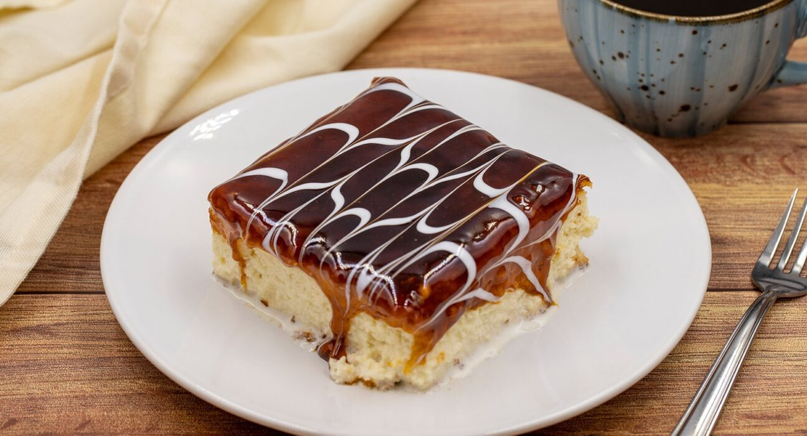
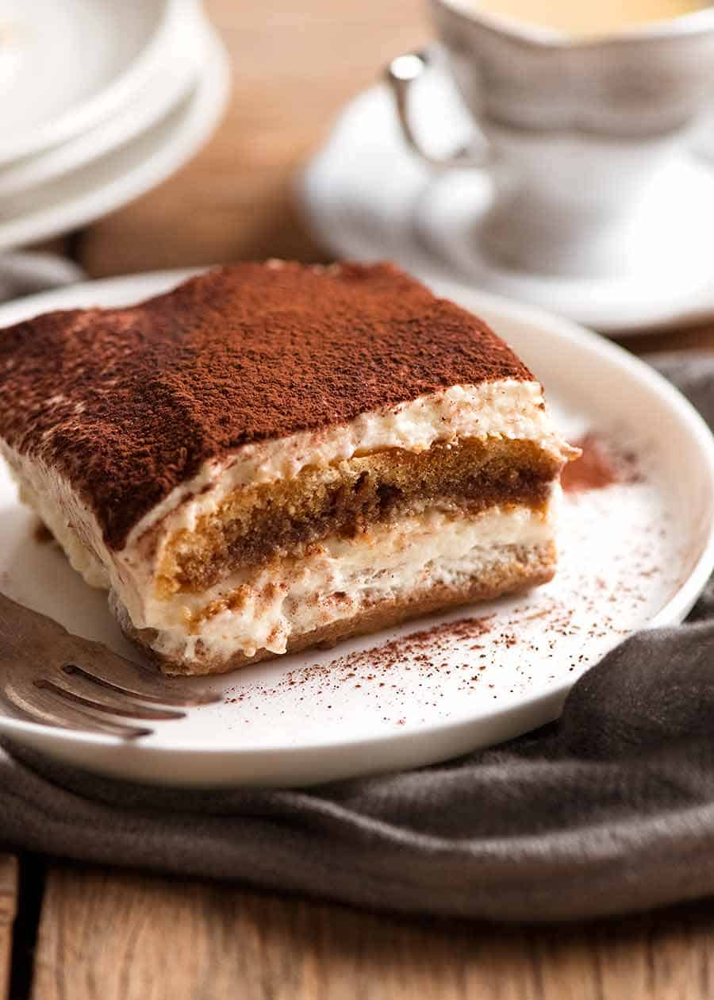

Trileçe
Trileçja është një ëmbëlsirë e njomur në tre lloje qumështi: qumësht i avulluar, qumësht i kondensuar dhe qumësht normal. Kjo ëmbëlsirë e ka origjinën nga Amerika Latine.
Përbërësit
- 6 vezë
- 300 g sheqer
- 300 g miell
- një pluhur pjekës
- një vanilje
- 400 ml qumësht panda
- 500 ml qumësht ëmbëlsirë
- 1 l qumësht të zakonshëm
- 500 g krem karamel (do ta hollojmë duke i shtuar qumësht)
Përgatitja
- Do të marrim 2 tasa të mëdhenj.
- Te njëri tas do të nxjerrim të verdhën e vezës dhe te tjetri të bardhën e vezës.
- Do e rrahim të verdhën deri sa të bëhet me një ngjyrë të verdhë të hapur, pastaj do të hedhim 300 gr sheqer, do i përziejmë mirë e mirë derisa të mos mbetet më sheqer, pastaj do t’i hedhim miellin dhe një vanilje dhe do ta përziejmë derisa të mos mbetet gjë.
- Më pas do të rrahim të bardhën e vezës deri sa të fryhet dhe të bardhën do e hedhim tek e verdha.
- Do t’i përziejmë ngadalë që të mos bjerë masa dhe do ta fusim në furrë me temperaturë 180° për 30 minuta.
Tiramisu
Tiramisuja është një nga themelet e kuzhinës italiane, një nga ëmbëlsirat më të pëlqyera dhe më të njohura në të gjithë botën.
Përbërësit
- 500 g djathë Mascarpone
- 6 vezë të freskëta në temperaturë ambienti (të verdhat veç nga të bardhat)
- 120 g sheqer
- 5-6 filxhanë kafeje ekspres të vakët ku kemi tretur 2 lugë sheqer
- 300-400 g biskota Savoiardi
- kakao e hidhur për spërkatje
Përgatitja
- Rrahim me rrahësin elektrik të verdhat e vezëve dhe sheqerin derisa të bëhen si shkumë, afërsisht pesë minuta.
- Djathin Mascarpone e punojmë pak me pirun ose me lugë që të bëhet si krem dhe e shtojmë në tasin me të verdhat e vezëve. Vazhdojmë ta përziejmë me rrahësin elektrik një deri në dy minuta.
- Bëjmë marengë me të bardhat e vezëve, i shtojmë te tasi i kremit dhe i përziejmë me kujdes nga poshtë lart me spatula ose me lugë druri.
- Biskotat i lagim te kafeja e vakët (nuk duhet të qullen shumë) dhe i vendosim në tavë pranë njëra-tjetrës duke krijuar një shtresë, hedhim sipër një shtresë me krem, vazhdojmë me një shtresë tjetër biskotash me kafe dhe përsëri një shtresë kremi.
- E spërkasim me kakao të hidhur, e mbulojmë me letër alumini dhe e lëmë në frigorifer për një natë.
Rreth Nesh
Mirë se vini në faqen tonë të internetit të recetave të gatimit, ku frymëzimi i kuzhinës takohet me krijimet e shijshme! Në Sweet Recipes, ne jemi një ekip entuziastësh të ushqimit, të pasionuar për të sjellë gëzimin e gatimit në kuzhinën tuaj.
Kontakte
Do të donim të dëgjonim nga ju! Nëse keni pyetje, komente ose thjesht dëshironi të ndani me ne aventurat tuaja të gatimit, mos ngurroni të na kontaktoni në sweet.recipes@gmail.com.
Receta të Ruajtura
Së shpejti: Një përmbajtje për të ruajtur recetat tuaja të preferuara për qasje të lehtë!